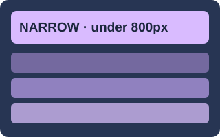
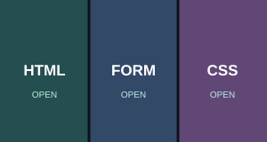

EXP. 001NO JS
開閉パネル
開閉状態をブラウザが管理。キーボードでも操作できます。
LIVE PREVIEW
ブラウザ標準で開けます
状態管理のJavaScriptも、クリック処理も不要です。
もうひとつ開いてみる
複数のパネルを独立して開閉できます。
ソースを見る
<details>
<summary>見出し</summary>
<p>開閉する本文</p>
</details>EXPERIMENTAL / WEB PLATFORM
HTML、CSS、そして少しのWeb API。
ブラウザが最初から持っている機能を、実際に操作して確かめる実験室です。
01 / INTERACTION
開閉状態をブラウザが管理。キーボードでも操作できます。
状態管理のJavaScriptも、クリック処理も不要です。
複数のパネルを独立して開閉できます。
<details>
<summary>見出し</summary>
<p>開閉する本文</p>
</details>開く・閉じる・外側を押して閉じる。標準の仕組みに任せます。
別の場所をクリックするか Esc で閉じられます。
<button popovertarget="info">開く</button>
<div id="info" popover>
内容
</div>モーダル化には少量のJS。フォーカスやEsc操作はブラウザが担当。
<dialog id="dialog">
<form method="dialog">
<button>閉じる</button>
</form>
</dialog>
// 開くときだけ JavaScript
dialog.showModal();02 / FORMS & FEEDBACK
日付、色、スライダー。OSやブラウザ固有の操作感も含めて標準です。
<input type="date">
<input type="color">
<input type="range" min="0"
max="100" value="65">必須・文字数・形式の検証はHTML属性で。JSは送信後の表示だけ。
<input required
pattern="[A-Za-z0-9]{4,10}"
minlength="4" maxlength="10">
<button type="submit">検証</button>datalist は自由入力できる候補リスト、select は何度でも選び直せる選択リスト。用途の違いを比べます。
入力した文字で候補が絞られます。別の候補を探す場合は文字を消してください。
選択後も ▽ から全候補を再表示できます。候補以外の自由入力はできません。
<!-- 自由入力できる候補リスト -->
<input type="search" list="browsers">
<datalist id="browsers">
<option value="Firefox">
<option value="Chrome">
</datalist>
<!-- 何度でも選択できるリスト -->
<select>
<option>Firefox</option>
<option>Chrome</option>
</select>進捗の progress と範囲内の値を示す meter は役割が違います。
<progress value="70" max="100">
70%
</progress>
<meter min="0" max="1"
value="0.8">0.8</meter>03 / CSS FEATURES
:has() でチェックボックスの状態を読み、親要素のスタイルを切り替えます。
.preview { background: white; }
.wrapper:has(input:checked)
.preview { background: #111827; }画面全体ではなく、部品が入る領域の幅に合わせてレイアウトを変更。
.wrapper { container-type: inline-size; }
@container (min-width: 260px) {
.card { display: flex; }
}横にスクロールすると、カードが定位置に吸着します。
.list {
display: flex;
overflow-x: auto;
scroll-snap-type: x mandatory;
}
.item { scroll-snap-align: start; }04 / ADVANCED FORMS
fieldset と legend で関連する入力をまとめ、disabled で一括無効化もできます。
<fieldset>
<legend>通知の設定</legend>
<label><input type="checkbox"> メール通知</label>
</fieldset>
<fieldset disabled>
<legend>変更できない設定</legend>
<input type="checkbox" checked>
</fieldset>optgroup でプルダウンに見出しを付けます。カテゴリ名は選択肢ではありません。
<select>
<optgroup label="HTML">
<option>dialog</option>
<option>details</option>
</optgroup>
<optgroup label="CSS">
<option>Grid</option>
</optgroup>
</select>multiple 属性で選択可能な項目を複数に。PCではCtrl / ⌘ を使う場合があります。
選び方はOS・ブラウザに依存します。
<select multiple size="4">
<option selected>HTML</option>
<option>CSS</option>
<option>JavaScript</option>
</select>accept と multiple で画像ファイルの複数選択を指定。アップロードはしません。
ファイルはこのページから送信されません。選択した名前はブラウザが表示します。
<label for="photos">画像を選ぶ</label>
<input id="photos"
type="file"
accept="image/*"
multiple>計算結果を示す要素 output。入力の変化を反映させる部分にだけJavaScriptを使います。
<form id="calc">
<input id="a" type="range" value="30">
<input id="b" type="range" value="12">
<output for="a b">42</output>
</form>
<script>
calc.addEventListener("input", () => {
calc.querySelector("output").value =
Number(a.value) + Number(b.value);
});
</script>05 / SEMANTIC & MEDIA
同じ name を付けた details は、別の項目を開くと前の項目が閉じます。
ここが最初に開いているパネルです。
Aは自動で閉じましたか？
JavaScriptは使っていません。
<details name="faq" open>
<summary>質問A</summary>
<p>回答A</p>
</details>
<details name="faq">
<summary>質問B</summary>
<p>回答B</p>
</details>ruby と rt で、日本語の読みや注釈を意味のある形で表現します。
文字とふりがなの位置を確認してください。
<ruby>薔薇<rt>ばら</rt></ruby>
<ruby>
天体観測<rt>てんたいかんそく</rt>
</ruby>picture と source で画面幅に応じて画像自体を変更。ウィンドウを縮めて試してください。

切り替え条件はデモの幅ではなく、ブラウザの画面幅800pxです。
<picture>
<source media="(min-width: 800px)"
srcset="wide.svg">
<img src="narrow.svg"
alt="レスポンシブ画像">
</picture>map と area で画像内の領域をクリック可能にします。3色の領域を押してください。

座標は画像の固有サイズに対応します。狭い画面では画像を横スクロールできます。
<img src="map.svg" width="300"
height="160" usemap="#links"
alt="リンク領域の説明">
<map name="links">
<area shape="rect" coords="0,0,99,159"
href="#semantics" alt="HTML">
<area shape="rect" coords="100,0,199,159"
href="#forms" alt="フォーム">
</map>audio / video の標準コントロールを比較。再生UIはOSやブラウザごとに変わります。
メディア本体はMDNのCC0サンプルを外部参照するため、再生には通信が必要です。
<audio controls preload="none">
<source src="audio.mp3" type="audio/mpeg">
</audio>
<video controls playsinline preload="none">
<source src="video.mp4" type="video/mp4">
</video>search は検索フォームの意味を示す要素。入力欄や検索処理そのものは別途必要です。
このデモはMDNの検索ページへ移動します。
<search>
<form action="/search" method="get">
<label for="q">サイト内検索</label>
<input id="q" name="q" type="search">
<button>検索</button>
</form>
</search>06 / COMPONENTS / EXPERIMENTAL
template shadowrootmode と slot でDOMとCSSの境界を実験。対応ブラウザで動作します。
スタイルをこの要素内に閉じ込めています。未対応環境では表示が異なります。
<div>
<template shadowrootmode="open">
<style>
strong { color: seagreen; }
</style>
<strong>Shadow DOM の内側</strong>
<slot name="message"></slot>
</template>
<span slot="message">差し込み内容</span>
</div>新しい selectedcontent を試します。ブラウザ対応に差があり、未対応環境では通常の選択UIになります。
対応環境では選択値の複雑な表示が可能です。未対応時は標準selectにフォールバックします。
<select class="custom">
<button><selectedcontent></selectedcontent></button>
<option value="mint">🟢 ミント</option>
<option value="blue">🔵 ブルー</option>
</select>
<style>
.custom, .custom::picker(select) {
appearance: base-select;
}
</style>04 / ABOUT THE LAB
このサイトは依存パッケージなしの静的HTML/CSSで作っています。ほとんどのデモはJavaScript不要です。ダイアログの起動、フォーム送信結果、計算結果の更新にだけ最小限のJavaScriptを使っています。メディア再生デモのファイルはMDN提供の外部サンプルを参照します。
ネイティブ要素でできることを優先。
OS・ブラウザによって外観が変わることも学び。
説明より先に、実際のUIを操作する。